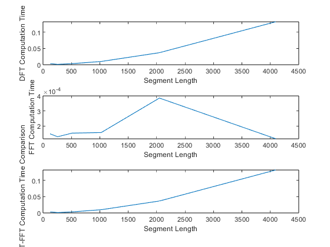

clc;
clear all;
close all;
[y,Fs]=audioread('MDSP_TUT_1\Another Brick In The Wall Pt.mp3');
y1=y(:,1);
i=1;
time_dft_fft=zeros(6,3);
x=zeros(7,1);
for j=7:1:12
N=2^j
tic;
x_dft=y(1:N)*dftmtx(N);
toc;
time_dft=toc;
tic;
x_fft=fft(y(1:N));
toc;
time_fft=toc;
time_dft_fft(i,1)=N;
time_dft_fft(i,2)=time_dft;
time_dft_fft(i,3)=time_fft;
i=i+1;
end
subplot(3,1,1);
plot(time_dft_fft(:,1),time_dft_fft(:,2));
xlabel("Segment Length");
ylabel("DFT Computation Time");
subplot(3,1,2);
plot(time_dft_fft(:,1),time_dft_fft(:,3));
xlabel("Segment Length");
ylabel("FFT Computation Time");
subplot(3,1,3);
plot(time_dft_fft(:,1),time_dft_fft(:,2)-time_dft_fft(:,3));
xlabel("Segment Length");
ylabel("DFT-FFT Computation Time Comparison");
N =
128
Elapsed time is 0.003161 seconds.
Elapsed time is 0.000111 seconds.
N =
256
Elapsed time is 0.000972 seconds.
Elapsed time is 0.000096 seconds.
N =
512
Elapsed time is 0.002983 seconds.
Elapsed time is 0.000115 seconds.
N =
1024
Elapsed time is 0.009832 seconds.
Elapsed time is 0.000126 seconds.
N =
2048
Elapsed time is 0.036717 seconds.
Elapsed time is 0.000249 seconds.
N =
4096
Elapsed time is 0.132141 seconds.
Elapsed time is 0.000099 seconds.
